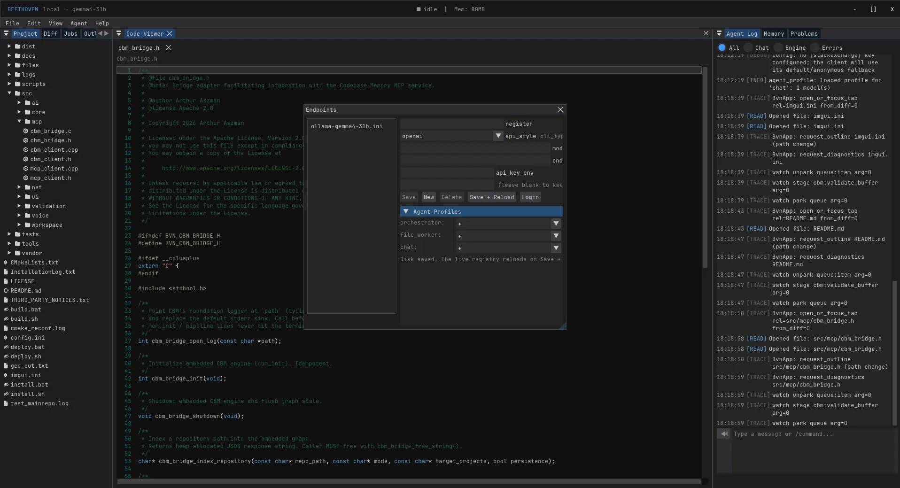
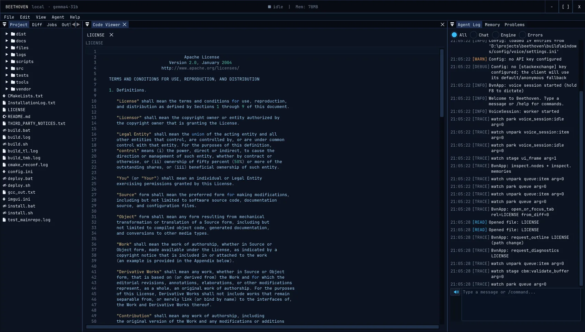
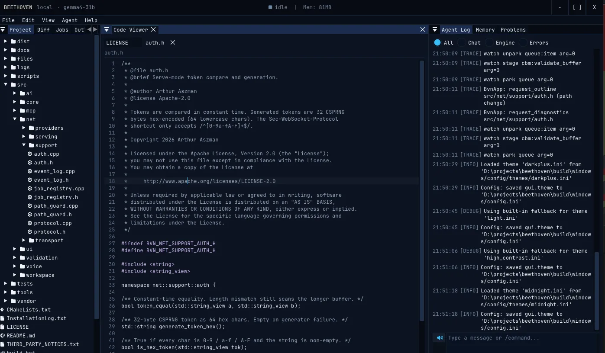

Op. 0.9 · pre-release · C++20 · Apache-2.0 · Windows & Linux
Structure is C++’s. Meaning is the model’s.
Beethoven is a native code studio and agentic harness for the model already on your GPU. It hands a 7B–31B local model exact symbols instead of whole files, checks every edit with the compiler before it lands, and refuses plans that cannot run. Free, open source, and nothing leaves your machine unless you point it somewhere.

The problem
The blind worker.
Every popular coding agent was tuned on a frontier model with a huge context window and a cloud bill. Point one at a 12B model on a mid-range GPU and three things happen.
The usual fix is a bigger model. Beethoven’s fix is a smaller job.
-
Context evaporates.
Forty turns in, the model forgets whether it is on Windows or Linux. It invents paths, hallucinates shell flags, and mangles syntax it wrote correctly an hour ago.
-
The worker is blind.
Asked to change a function it was never shown, a 12B model burns a thousand tokens guessing what the struct next door looks like. Then it guesses wrong.
-
Failures are swallowed.
In a sequential script, the syntax error in step two surfaces after step nine has run. The model repairs the wrong thing with the wrong context.
The rule
One split, three owners.
The whole harness is built on a single rule. Three kinds of thing get decided, and each has exactly one owner. C++ never overrules the model with a regex, and the model is never asked a question code can answer.
Structure
Whether a plan can run at all. Whether the files it names exist, whether two tasks change one symbol at once, whether a dependency finishes before the task that needs it. Decided by code, from the plan and the syntax tree, with no English read and no model asked.
Meaning
What a goal asks for. What a symbol should do. Which file a change belongs in. These are readings of a sentence, and the thing that read the sentence is the thing that decides.
Facts
The tree, the outline, the imports, the test runner this machine actually has. The harness finds them and puts them in the prompt. The model spends its tokens deciding, not discovering.
The check is a fixed list.
When the orchestrator emits a blueprint, C++ checks its structure against the tree. Each finding is a sentence the planner is shown word for word. Three are refusals. The rest are questions the planner must answer or fix. These are the actual format strings from the engine.
A finding goes back to the planner in its own words, three asks at most for the whole plan. The harness never quietly deletes a task over its own reading of a sentence.
- Refusetask %d names %s, which is not in the project and no task creates it
- Refusetask %d recreates %s, which task %d deleted
- Refusethe validation command names %s, which is not in the project and no task creates it
- Asktask %d names symbol %s in %s; %s is where the project defines it today
- Asktask %d writes %s; nothing else in this project has that extension
- Asktasks %d and %d both change %s in %s in generation %d; the second starts from the first’s result — one task, or say why two
- Asktask %d is in generation %d and depends on task %d in generation %d; a dependency has to finish first
- Asktask %d edits %s, which goal_files does not list
- Asktask %d changes %s, a test that existed before the run; say why in seed_tests_touched or drop the task
- Asktask %d deletes %s; say in definitions whether its definitions are moved by this plan or removed from the project
Try it
What the model sees.
Most agents paste the whole file into the prompt and hope. Beethoven keeps a Tree-sitter parse of the workspace and cuts out the exact byte range of the symbol a task touches, plus the signatures it depends on. Pick a symbol below. The same Tree-sitter C++ grammar the engine uses runs here in WebAssembly. Paste your own file if you like.
What this is. A small reimplementation of the slicing rule in JavaScript, for one file. The engine does it in C++ over the whole workspace, follows dependencies across files, and hands the result to the worker together with the task’s behaviour contract. The parse is the same; the plumbing is not.
The engine
What is in the box.
A concurrency-first C++20 engine, a Dear ImGui workbench, and a voice pipeline, in one binary with no runtime underneath it. Every item here is in the repository today.
Contract-first blueprints orchestrator
An orchestrator model emits a strict JSON plan: one task per unit of work, each naming its file, its scope, its dependencies and, in its own words, the behaviour it must deliver. That behaviour travels with the task and reaches the worker verbatim. No worker ever guesses a signature.
Symbol slicing tree-sitter
A live Tree-sitter graph of the workspace. When a worker is dispatched, the engine extracts the exact byte ranges of the symbol and its dependencies and injects them into the prompt. A worker sees a few hundred tokens of the right code, not a few thousand of the wrong file.
Parallel tasks, safe splicing std::jthread
Tasks run concurrently across native threads. Tasks on the same file are serialised inside a wave, and a byte-offset tracker adjusts every later patch for the length changes earlier ones produced. Two workers editing two functions in one file never conflict.
Validation the language declares 107 language files
No tool name is written in the C++. Each language file declares how a file of its kind is checked, how the tool is spelled on each platform, and which output lines mean failure. Errors go back to the worker on its own turn, while it still holds the file. A language that declares nothing falls back to the grammar already parsing it.
<bvn-compose>
<extensions>cpp, cc, cxx, hpp, hh, hxx</extensions>
<accepts>c</accepts>
<entry-points>main.cpp, src/main.cpp</entry-points>
<header-for from="cpp, cc, cxx" to="hpp" />
<include-form>#include "{path}"</include-form>
</bvn-compose>Persistent memory sqlite
An embedded SQLite store carries environment facts, project quirks and past corrections across sessions. The model stops rediscovering that this project uses make, not cmake, and that the host is RedHat, not Ubuntu.
Prompts as Markdown with tags <bvn-section>
Every sentence a model reads lives in a Markdown file under files/prompts/, cut into sections by role and tag. A worker editing a .c file gets C rules; one editing .ts gets ES module rules. Metadata tags are stripped before the prompt leaves, so the model never sees a byte of plumbing.
Voice, in process sherpa-onnx
Hold F8 and talk. Whisper runs inside the binary through ONNX Runtime, so speech never leaves the machine. Kokoro or Piper speak back. A role arbiter fuses playback state, mic activity and a self-voice fingerprint so you can interrupt the agent mid-sentence through speakers, not just headphones.
Serve mode --serve
Run the engine headless on the box with the GPU and attach the workbench from another with --connect. HTTP plus WebSocket, token auth, optional TLS, loopback by default. A phone portal for approving diffs from the couch is designed and in the plans folder.
beethoven --serve --port 7420 --auth-token $BVN_SERVE_TOKEN
beethoven --connect ws://gpu-box:7420Architecture that is enforced ctest
Four source-level gates run as ordinary tests: ai/llm stays transport-only, no exception is swallowed silently, voice locks keep their order, and the watchdog’s hang-breach path stays allocation-free. Each gate self-tests its own matcher first, because a gate that cannot fire is decoration.
A workbench, not a web view dear imgui
Project tree, code viewer with outline and diagnostics, diff review, jobs, agent log, memory inspector, four themes, ten UI locales. It opens before an Electron app finishes loading its splash screen.


Hardware
Will it run on my box?
Beethoven talks to any OpenAI-compatible endpoint. Ollama, llama.cpp’s server, vLLM and LM Studio all qualify. The model is your choice; the harness is what makes a small one useful. A rough guide by VRAM:
| You have | Run | What to expect |
|---|---|---|
| CPU only | The embedded 0.5B Qwen for chat, plus a 3B–7B coder at Q4 on the CPU | Chat is instant. Composition works but is slow. Plan with plan --dry-run before you compose. |
| 8 GB | 7B–8B coder at Q4 (Qwen2.5-Coder 7B, Gemma family) | Single-symbol tasks land reliably. Multi-file goals want a tight blueprint and a small generation. |
| 12 GB | 12B–14B at Q4 | The class the harness was designed around. Multi-file goals, parallel workers, compiler repair loops. |
| 16 GB | 14B at Q6, or 20B–27B at Q4 with offload | Comfortable. The orchestrator gets noticeably better at writing blueprints that pass the structure check first time. |
| 24 GB+ | 27B–32B at Q4 (Gemma 4 31B is the author’s daily driver) | Everything on. This is the configuration the screenshots on this page were taken with. |
An endpoint is one small file. The filename is cosmetic; register is the name agent profiles ask for, so you can reach the same model through two providers and let the registry pick.
# files/config/endpoints/ollama-local.ini
endpoint = http://localhost:11434/v1/chat/completions
api_style = openai
model = qwen2.5-coder:14b
register = coder-14bHonest footnote. The harness does not stop you pointing an endpoint at a cloud provider. The privacy claim on this page holds exactly as far as your endpoint files do.
Limits
What it will not do.
Projects that only list strengths are asking you to find the weaknesses yourself. Here are ours, as of Op. 0.9.
It is pre-release, and it moves.
No downstream users yet, no backwards-compatibility promises, and the author deletes legacy code on sight. Config formats can change between commits.
You build it from source.
There are no binaries yet. The installer provisions a private MSYS2 toolchain on Windows, or apt packages on Debian-family Linux, then CMake does the rest. Budget a few minutes on first build.
No macOS.
Windows is the primary target and Linux builds in CI. Nobody has built it on a Mac.
A 7B model will not architect your monolith.
The harness makes small models reliable at scoped tasks. It does not make them wise. Read the blueprint before you approve it, and keep goals to a generation or two.
Validation is only as good as the language file.
If a language declares no checker, the engine falls back to parse errors and says so. It does not pretend to have compiled your Haskell.
The workbench is Dear ImGui.
It is fast and it is honest, and it is not VS Code. There is no extension marketplace, and the editor is a viewer with review tools, not a full editing surface yet.
Start
Three commands.
The installer never touches your global compilers. The toolchain lives outside the repository, so git clean -xdf cannot destroy it.
-
Clone
The engine, the workbench and the voice pipeline are one repository.
git clone https://github.com/anydaytv/beethoven.git && cd beethoven -
Install the toolchain
Windows gets a private MSYS2/MinGW64 under
%LOCALAPPDATA%\beethoven. Linux gets its apt packages. Useinstall.batfrom cmd.exe../install.sh -
Build and run
Builds the main executable with the
devpreset: GUI, voice and serve mode all on../build.sh beethoven
Then point it at a model and give it a goal.
Have Ollama running with a coder model pulled, drop an endpoint file in files/config/endpoints/, and either launch the workbench with no arguments or run a goal from the shell.
ollama pull qwen2.5-coder:14b
beethoven plan "add a --json flag to the CLI and cover it in the tests" --dry-run
beethoven compose "add a --json flag to the CLI and cover it in the tests"plan --dry-run stops after the tree call and costs one or two model calls. It is the cheap way to find out whether your model can write a blueprint that passes the structure check before you let it write code.
Discussions
Bring your setup.
Comments here are GitHub Discussions, through Giscus. Which model, which card, what worked and what did not. Sign in with GitHub to post.